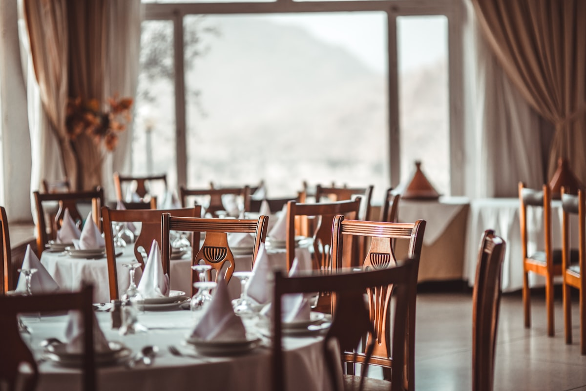

1. Trade & Tryon Epicenter
Situated in the heart of Uptown's business district at One South Tryon, within walking distance of Bank of America tower, Truist Center, and Belk Theater.
An elevated Japanese dining destination nestled within Uptown Charlotte's premier culinary food hall at Trade & Tryon.

Monarch Market at One South Tryon is Charlotte's premier luxury food hall, bringing together top culinary artisans from across the region in an 18,000-square-foot multi-level architectural space. Kuya Omakase 2.0 serves as the centerpiece Japanese concept.
Located at the iconic intersection of Trade & Tryon in Uptown Charlotte.
Situated in the heart of Uptown's business district at One South Tryon, within walking distance of Bank of America tower, Truist Center, and Belk Theater.
Convenient light rail access via the CTC/Arena and 7th Street LYNX Blue Line stations, just two short blocks away.
Ample parking available in the One South Tryon parking deck, adjacent center city parking decks, and evening street metered parking.
Open daily with fresh sushi rolled to order from 11:00 AM until late evening.
View Hours & Directions